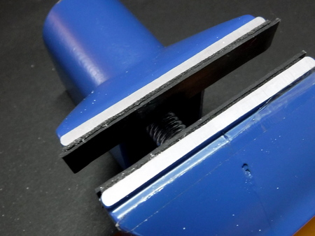
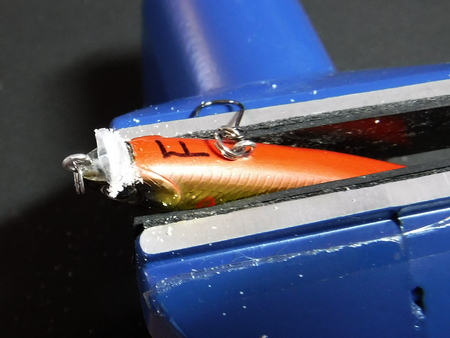
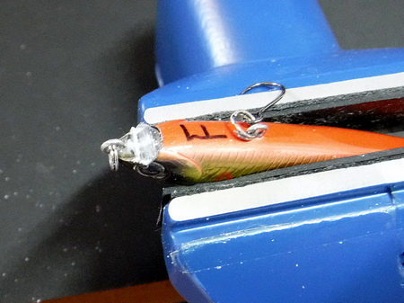
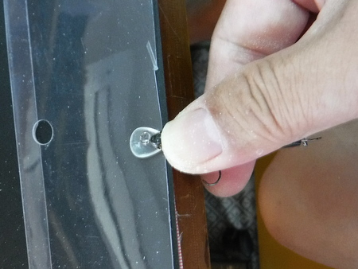
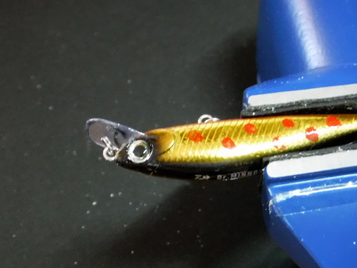
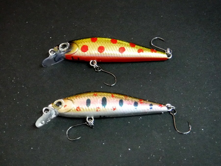

ティップス
釣りの前夜に リップの折れたミノーの修理方法
僕は 2009年に初めてミノーを使い出したのですが、それまではスプーンかスピナーばかりでした。
叔父がミノーで爆釣するのを見て、近所にあった上州屋で初めて買ったのが、陳列されていた中で一番安かったダイワのドクターミノー（初代）でした。以来、とても良く釣れて、コストパフォーマンスが最高なので、ドクターミノー以外を買ったことは数えるほどしかありません。
良く釣れるのは素晴らしいのですが、対岸の岩や石にぶつけると容易にリップが折れてしまうのが泣き所です。これは他の一体成形タイプのミノーでも同じではないかと思われます。バルサのボディに厚手のプラスチック製リップの付いたラパラカウントダウンなどでは、かなりリップの折損は少なくなりそうですが.....
ミノーを壊すことを恐れていては、釣りにならないので、気にせずどんどん対岸ギリギリを狙うのですが、作者の技量では、リップの破損は多々発生します。
リップが折れて使い物にならなくなったドクターミノーは、もったいないので保管しておきました。ある時ふと、工具箱の中にあった、模型工作用の精密ノコギリを見た時、これでリップを直せるのでは？ と思いついて、やってみることにしました。
その時、叔父に、リップの折れたミノーをどうしているか電話で聞いてみると、
「捨ててるよ」
と言いました。思わず、
「今度折れたヤツは取っておいて、俺にちょうだいね！」
と大声で言ってしまいました。（笑） さすが、お金持ちは違う.....と感心した次第です。
必要な工具と材料
- 汎用小型バイス
この作業を行うにあたっては、小型の工作用バイスが必要です。現在作者が使っているのは 、この写真の
という製品です。他にも同じような大きさ、性能で多数の製品が売られていますが、1500円くらいの製品で十分間に合います。
バイスの口（挟む所）に、薄いゴム板を両面テープで貼り付けて、ミノーに傷が付かないようにしておくと良いでしょう。

バイスの口（挟む所）に、薄いゴム板を両面テープで貼り付けた - 透明樹脂の板
コンセントのタップなど、電気製品のパッケージの表面によく使われている透明な樹脂製の板でミノーのリップを作ります。それほどたくさんは必要ないので、捨てずに取っておくと、こんな所で役に立ちます。
適度な弾力があって、透明で折れにくく、リップに加工するには最適です。何といっても捨てられる物ですからタダです。 - 透明樹脂板を切ることができるハサミ
奧さんやお母さんの裁縫用ハサミを使うと怒られます。（笑） 百円ショップで台所用の大型ハサミ（牛乳パックが切れるようなタイプ）が良いです。最近の百円ショップの製品は、本当に品質が良く、今作者の台所にあるハサミも本当によく切れます。 - 百円ショップで買える瞬間接着剤、通常のタイプで、浸透性の良いもの
- 精密ノコギリ（模型用）
ホームセンターでも売っていますが、2,000円ほどします。百円ショップで売っている工作用ノコギリでも良いのですが、刃が少々厚いので、それに適合する厚めの樹脂板を用意する必要があります。
買うのであれば、百円ショップで首にかける事務用ネームプレートか、透明のカードケースが使えるでしょう。 - 黒色の細い油性サインペン
リップの形を樹脂製の板に縁取る時に使います - リップの折れたミノーと同じ製品
リップの角度を決めたり、型取りをするときの参考として必要になります。
補修の手順
- 折れたリップの残り、根元の部分を精密ノコギリで切り取る。深く切り込みすぎて、ミノー内部のワイヤーで刃を傷めないように！

折れたリップがわずかに残っている
慎重に切り落とす - 同じ製品のリップの角度を見ながら、ノコギリで切れ目を入れる。
横から見た時と、正面から見た時の、２方向のリップ角度が決め手となるので、慎重に！ - 同じ製品のリップを参考に、樹脂板からリップを切り出す

同じ製品を透明の樹脂板に当てて、リップの形をマジックで縁取る。 - リップをミノー本体に仮に差し込んで、嵌まり具合を確認し、良ければ瞬間接着剤で固定する

- 同じ製品を参考にして、リップの形状をハサミで微調整する。
修理したミノーの泳ぎが気になる人は、ハサミを現場に持って行ってリップの形状を微調整する

上が修理の完了したダイワ：ドクターミノー２
赤い点は作者がタミヤのペイントマーカーで書き加えています
リップを大きくすると空気抵抗が増えて飛距離が出ないかもしれないが、リップの付け根を厚くするだけなら悪影響は無いと思う。メーカーが薄く作っているのは大人の事情なのか？ 長持ちしたら商売にならないから？
安価なミノーばかり買って、さらに修理してまで使うような人物がいては、商売あがったりだわなぁ。（笑）
ティップス 目次へ
サイトマップ
ホームへ
お問い合わせ